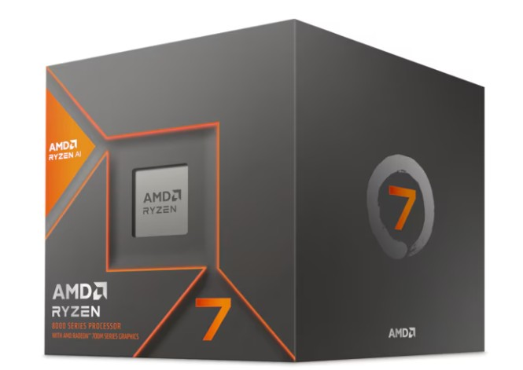

Informasjon om Komponenter:
Oppdag vårt utvalg av førsteklasses komponenter. Her kan du lære mer om hva de forskjellige komponentene gjør og hvordan de kan forbedre din datamaskin.
CPU-en er hjernen i datamaskinen. Den utfører instruksjoner fra programmer og styrer alle operasjoner i datamaskinen. Det er viktig å ha en god CPU for å sørge for at datamaskinen kan utføre oppgaver raskt, for eksempel å kjøre programmer, åpne dokumenter og bruke nettet. En god CPU kan også hjelpe med å redusere ventetiden mellom oppgaver, noe som kan spare deg tid og frustrasjon.

GPU-en håndterer all grafikkbehandling og er spesielt viktig for spill og grafisk design. En god GPU kan også hjelpe med å redusere ventetiden mellom oppgaver, for eksempel å laste opp spill og åpne dokumenter med mange bilder. GPU-en er også viktig for å sørge for at datamaskinen kan håndtere grafikkintensive oppgaver, som for eksempel 3D-modellering og videoredigering.
RAM lagrer midlertidig data som brukes av datamaskinen for å utføre oppgaver raskt. Jo mer RAM, jo mer data kan datamaskinen lagre og jo raskere kan den utføre oppgaver. En god RAM kan også hjelpe med å redusere ventetiden mellom oppgaver, for eksempel å laste opp programmer og åpne dokumenter.
Disse lagringsenhetene lagrer all din data, med SSD-er som gir raskere tilgang enn tradisjonelle HDD-er. En god harddisk eller SSD kan hjelpe med å redusere ventetiden mellom oppgaver og sørge for at datamaskinen kan starte opp raskere. En god harddisk eller SSD kan også hjelpe med å sørge for at datamaskinen kan lagre og hente data raskt, for eksempel å laste opp spill og åpne dokumenter med mange bilder.
HiTEK AS er et firma som ble startet i 2020 av vår daglig leder, Alf Viggo Torgalsbøen. Vi har siden starten vokst seg til å bli en av de ledende leverandørene av IT-produkter i Norge. Vårt mål er å gi våre kunder de beste produktene og tjenestene, samtidig som vi har en god pris. Vi har en stor erfaring med å levere produkter til privatpersoner og bedrifter, og vi har en god kundeservice.

Alf Viggo Torgalsbøen
Daglig leder